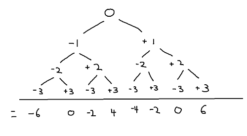

date posted: 2020-03-25
... 퇴근후 하려고 하니 눈물이 살짝 흐르는거 같네요.
그냥 자고 출근 일찍해서 문제를 풀어 보았습니다. 원래 보통 일찍 출근해서 1~2시간정도 책읽고 일을 시작 하는데 알고리즘 문제 같은 머리를 좀 돌려야 할때는 순서를 바꿔야 할거 같네요.
슬프지만 당분간은 아침에 문제를 풀고 저녁에 책읽는걸로...
시작하기전에 TMI 어제 "Tears of the Sun" 이라는 실화 바탕의 영화를 봤는데 너무 재밌엇네요. 마지막에
명언이 하나 나오는데:
The only thing necessary for the triumph of evil is for good men to do nothing.
-Edmund Burke
"악한자가 업적을 이루는데 필요한건 좋은사람들이 아무것도 안하는거다" 라는 말인데요. 최근에 뉴스에서 "Neutrality always takes side of tormentor not the tormented" 라는 말을 듣고 인스타에 적어놨엇는데 어제 이것도 보고 너무 와닿았네요.
요즘 코로나, n번방 때문에 난리인데 우리모두 저희가 옳지 않다 생각할땐 용기내어 나설수 있는 사람이 되길 바랍니다.
문제설명: https://programmers.co.kr/learn/courses/30/lessons/43165
아직은 문제를 바로 보고 풀 실력이 안되는것 같습니다 (혼자서 풀려고 노력은 해보세요) 제 스스로 풀때까지는 사람들의 답을 보고 이해하고 거기서 조금 개선 할것이 있으면 해보도록 하고 이해한대로 설명을 해보겠습니다.
한명의 풀이보다 이답 저답 다 한번 봐보시길 추천!
실제로 손으로 풀어보신다면 이게 바로 Breadth First Search 를 사용 하고 있다는것을 알수 있을것입니다. numberlist 에 있는 숫자들을 possible_targets 에 넣어주는것인데 각 숫자마다 +- 즉 두개의 경우의 수를 가지기 때문에 2^n 개의 가능성이 있습니다.
예시: numberlist = [1,2,3], target = 6
위에 방식을 시각화 해보겠습니다. 
모든 경우의수의 답이 있는걸 쉽게 볼수 있습니다. 저희의 target 은 6 이기 때문에 이와 동일한 답은 하나뿐이기때문에 저희는 1 은 return 합니다.
def solution(numberlist, target):
possible_targets = [0]
for number in numberlist:
lst = []
for j in possible_targets:
lst.append(j + number)
lst.append(j - number)
possible_targets = sub
return possible_targets.count(target)
위의 코드를 퍼온곳은 아래 References 섹션에 기재했습니다.